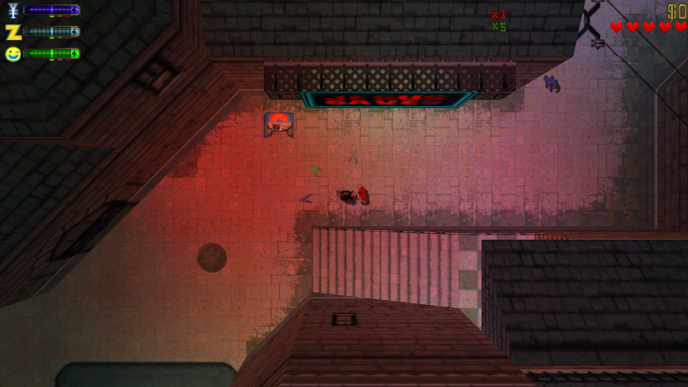
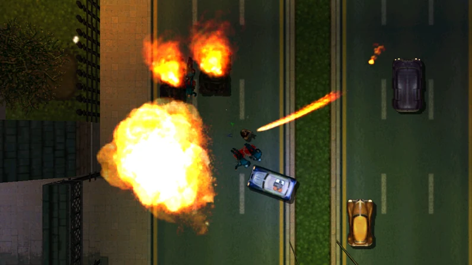
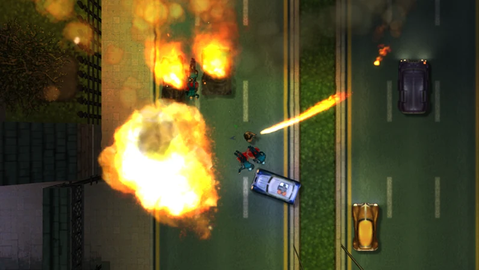
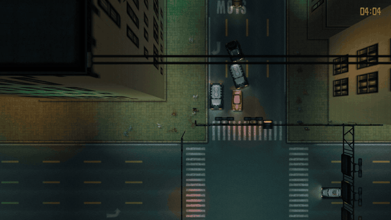
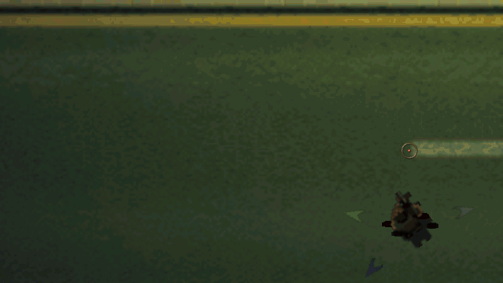
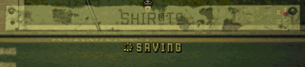

The definitive edition of GTA2
The original 1999 game, now on Windows, macOS, Linux, the Nintendo 3DS and in your browser. Keep it untouched, or turn on the extras you want: smoother frames, new lighting, day and night, twin stick controls, autosave.
Bring your own copy of GTA2: the free 2004 release works. reG2 is a beta, so expect bugs and please report them. No multiplayer yet.
Classic or enhanced
On first start, CHOOSE YOUR STYLE asks how you want to play. Nothing is forced: every extra can be turned on or off later in OPTIONS (start menu, or Escape in game), one by one.

Classic
The game as it was in 1999: same lighting, same controls, saves at churches only.
Enhanced
Refined lights and shadows, the day and night cycle, twin stick controls, autosave, job retry and frenzy respawn.
Whatever you pick
- It runs at your screen's resolution, and a wide screen shows a bit more on the sides.
- It draws a frame each time your screen refreshes, while the game itself keeps its original speed.
- The settings are in the game: OPTIONS replaces GTA2 Manager, the original's separate settings program, in five pages (GAME, GRAPHICS, DISPLAY, SOUND, CONTROLS). Escape during a game pauses it and opens the same menu, with the original pause screen's numbers under STATISTICS.
- Every menu works with the mouse, the keyboard or a gamepad.
- A few crashes of the original are fixed, among them some the community found (Vike's GTA2 11.44 patch).
Extras
- Graphics
- Graphics › Preset switches between CLASSIC and ENHANCED: true colour, per-pixel lighting, car headlights, light from gunfire, explosions and fires, fire effects (heat haze, smoke and embers), ambient occlusion, soft shadows, bloom, anti-aliasing.

Classic
Enhanced- Day and night
- Game › Lighting › Day-night cycle instead of the fixed dusk.
- Frame rate
- As fast as your screen, or a fixed limit up to 240 fps (Display › Frame limit, where 30 ORIGINAL brings back the original's rate). The game logic still runs at 30 steps per second, and reG2 fills in the frames in between.

- Controls
-
Controls lets you change every key, in three columns: the original keys, a second set and the gamepad.
Keyboard and mouse: the second set is ready to use: WASD to move, F to get in and out of cars, left click to shoot, the wheel to change weapon.
Gamepad: complete, beyond the original's basic joystick: any pad plugged in, analog driving, every menu, its own button pictures.
Twin stick (Controls › Twin stick), in the style of Hotline Miami: move with one stick or WASD, aim with the other or the mouse. Shots go where you aim and the camera leads a little ahead the way you aim; hold Shift (LT on a pad) to look out toward the cursor. The turrets of the fire truck, tank and gun jeep aim the same way.

- And also
- 3D sound, camera zoom, HUD scale, a frame rate counter. The new menus follow the game's language, as far as your copy of the game has it.
Saves
- Churches
- Saving at a church costs the same as in the original game. reG2 also keeps a save for each city, so you can go back to a city you have left.
- Autosave
-
Game › Autosave saves after each job or kill frenzy and as you leave a city. A small SAVING sign shows while it writes. When you quit from the pause menu, you choose: SAVE AND QUIT, or QUIT without saving.

- Retry jobs
-
Game › Retry jobs: when a job or a kill frenzy fails, retry it from the pause menu, a few steps from where it started, with the money you had then.

- Frenzy respawn
- Game › Frenzy respawn: a failed kill frenzy comes back on the map at once, like a job's phone after a failure: its skull, or for a vehicle frenzy a new vehicle where the first one was parked. A passed frenzy never comes back.
- Load game
- RESUME SAVED STATUS shows your saves with a tab per city: church save, autosave and retry, each with its money, jobs passed and date.
Autosave, retry jobs and frenzy respawn are off unless you turn them on, or pick ENHANCED. With CLASSIC, only churches save, as in the original.
Multiplayer
Network play is coming.
Download
| Windows 10 or later |
Unzip anywhere and run |
|---|---|
| Linux x86-64 |
The simplest: make it executable and run it. Also as a Flatpak ( |
| macOS 11 or later, Apple Silicon and Intel |
Untested: the builds come straight from GitHub's CI, so please tell us if it works. The app isn't signed by Apple, so the first time, right-click it and choose Open. |
| Browser A recent Chrome, Edge, Firefox or Safari |
Give the page your copy of GTA2. Nothing is uploaded: the game files stay in your browser, on your device. |
| Nintendo 3DS Homebrew |
Its own repository, with its own releases. |
On first start reG2 asks for the game files: it can copy an existing GTA2 install, or install from the free Rockstar Classics installer or the CD. All releases, with their notes, are on the releases page.
No copy of GTA2?
Rockstar gave GTA2 away for free in 2004, and that release works with reG2. The Internet Archive keeps it: download GTA2INSTALLER.exe (about 350 MB) from archive.org/details/gta2_rockstar-classics, then point reG2 to it on first start.
Where files go
reG2 looks for the game in GTA2_DIR, the current folder and its own folder, else in the per-user folder below, where the first start copies it. Settings (gta2_registry.ini) and saves (player/) sit next to the game data; reG2.log is written only after a crash or an error.
| Windows | %APPDATA%\reG2\ |
|---|---|
| Linux (AppImage, tar.gz) | ~/.local/share/reG2/ |
| Linux (Flatpak) | ~/.var/app/io.github.reG2_project.reG2/data/reG2/ |
| macOS | ~/Library/Application Support/reG2/ |
Built on gta2_re
reG2 is a fork of gta2_re by the CriminalRETeam, and all the credit for the game itself goes to them: they rebuilt GTA2 (PC, version 10.5) function by function, in C++ that compiles back to the original machine code.
reG2 adds what you need to run it today (SDL3, OpenGL, sound, gamepads) and some extras on top.